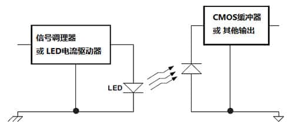
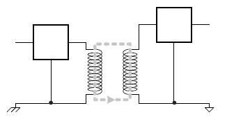
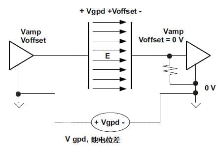

🚀 本文转载自： 光电隔离、磁隔离和电容式隔离三种常见隔离技术的特性
在一些恶劣的高电压、高功率工作环境中应用传感器传输信号，需要使用隔离器确保信号的完整。
为了防止高电压和高功率危险，设计中可以使用隔离器 (isolator) 作为系统的隔离屏障，使电压信号在传感器和控制器之间传递而不受共模电压的影响，确保信号完整。
还有一个关键原因是，现实中一些电信基础设施需要高速地传输数据及信号，会涉及高功率，而使用隔离器可以令系统得到保护。
电流隔离是电气系统中的一种隔离技术。在传感器和其他电子设备之间提供电流隔离，可以防止直流或不受控制的瞬态电流影响。然而，传感器传递的数据和能量仍然需要通过隔离屏障传送。
电流隔离屏障有三种常见技术 —— 光电隔离、磁隔离和电容式隔离。虽然这三种技术隔离屏障的介质有所不同，但最终目标都是相同的。
# 光电隔离：成熟易用的技术
光电隔离 (或称光隔离)，是三种技术中使用最早的，并且易于使用。如下图：

它利用光将信息传输到隔离栅的另一端。通常由发光二极管 (LED) 将信息传输到光敏接收器（如晶体管）。光隔离的主要优势是应用广泛，对于慢速数字信号传输是公认的低成本隔离解决方案；高速、数字光耦合器则往往较为昂贵。 光耦合器隔离法一般用于信号的直流状态很重要的场合。随着时间的推移，LED 可能会损耗，因此光隔离通常需要补偿和频带防护，以保证在整个寿命期间正常工作。
# 磁隔离：速率高而磁场抗扰度弱
磁耦是基于磁隔离技术的隔离器件，也成为磁隔离器。如下图：

变压器隔离利用变压器线圈将信息传输到隔离栅的另一端。隔离栅一端的变压器绕组中的电流发生变化时，会在另一端的变压器绕组中感生相应的电流变化。变压器隔离法一般用于涉及交流信号（例如以太网）、非常适合进行变压器耦合的应用场合。变压器隔离在数据速率较高的系统中具有优势，而且它还可以用来提供隔离电源，但与其它解决方案相比，变压器通常非常庞大。
我们会发现，有些磁耦可以以高达 100Mbps 速度的脉冲电流通过隔离屏障，磁耦的数据传输速率特性可以在 datasheet 中找到。
但是要留意的是，磁耦的功耗会随着数据速率增加而增加。它对电磁干扰也很敏感，而在 HVAC 系统和涉及电机的工厂自动化环境中的磁场是很大。
# 电容式隔离：更好的解决方案
与磁隔离一样，电容式隔离具有用于编码和解码输入 AC 信号的数字电路，利用可变的电场在隔离屏障中传输信息。如下图：

电容式隔离器无法传递直流信号，因此它们本身就是一个很好的隔离器。电容式隔离器不易受磁场噪声影响，而仍然保持高数据速率和低功耗；这种方法与光耦合器相比具有明显的性能优势，但通常很容易受共模和 ESD 瞬变影响。